材料
※粉量を変えると自動計算されます
生地
コーヒーフィリング
トッピング
作り方
生地
STEP 1
ホームベーカリーで生地を作る
ホームベーカリーに材料をセットし「生地コース」で生地を作ります。コースが終わったら、次の作業に進みます。
ホームベーカリーに材料をセットし「生地コース」で生地を作ります。コースが終わったら、次の作業に進みます。
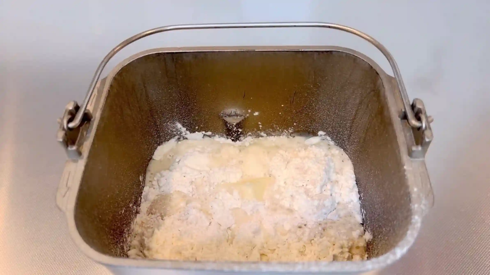
STEP 2
コーヒーフィリングを作る
STEP 3
生地を取り出し丸めて、ボウルをかぶせて10分おく
生地を丸めて表面を整え、10分ほど休ませます。生地を休ませることで伸ばしやすくなり、次の成形がしやすくなります。
生地を丸めて表面を整え、10分ほど休ませます。生地を休ませることで伸ばしやすくなり、次の成形がしやすくなります。
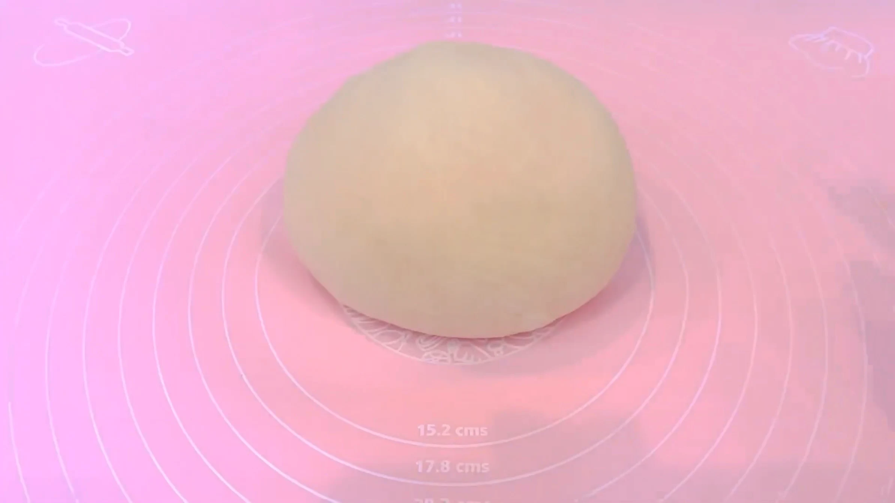
STEP 4
生地を35㎝×45㎝に伸ばす
生地を四角に伸ばす際は、中央から左上、右上、左下、右下へと、めん棒を外側に向かって動かします。中央から四隅へ均等に伸ばしていくと、自然と四角い形に整っていきます。
生地を四角に伸ばす際は、中央から左上、右上、左下、右下へと、めん棒を外側に向かって動かします。中央から四隅へ均等に伸ばしていくと、自然と四角い形に整っていきます。
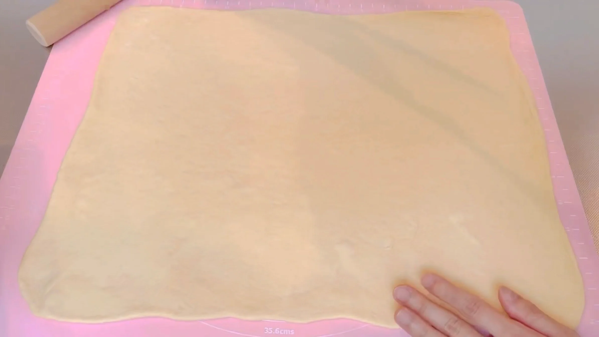
STEP 5
コーヒーフィリングを塗る
生地にコーヒーフィリングを塗ります。端まで塗ると、この後の成形時にフィリングが飛び出てきてしまうため、少し余白を残して塗るのがポイントです。
生地にコーヒーフィリングを塗ります。端まで塗ると、この後の成形時にフィリングが飛び出てきてしまうため、少し余白を残して塗るのがポイントです。
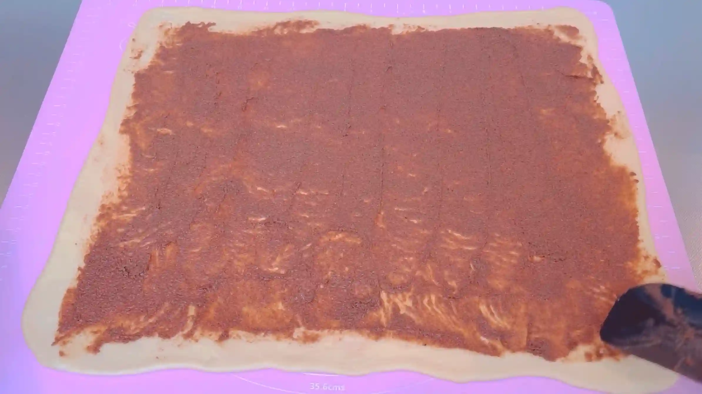
STEP 6
生地を巻く
巻き始めはフィリングがすべって巻きづらいですが、生地で芯を作ると巻きやすくなります。
巻き始めはフィリングがすべって巻きづらいですが、生地で芯を作ると巻きやすくなります。
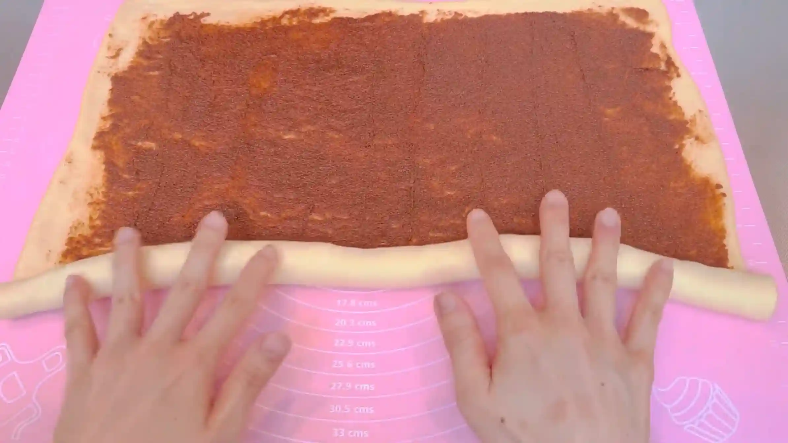
STEP 7
巻き終わりを閉じる
巻き終わりの生地を指でしっかりつまみ、開かないように閉じます。
巻き終わりの生地を指でしっかりつまみ、開かないように閉じます。
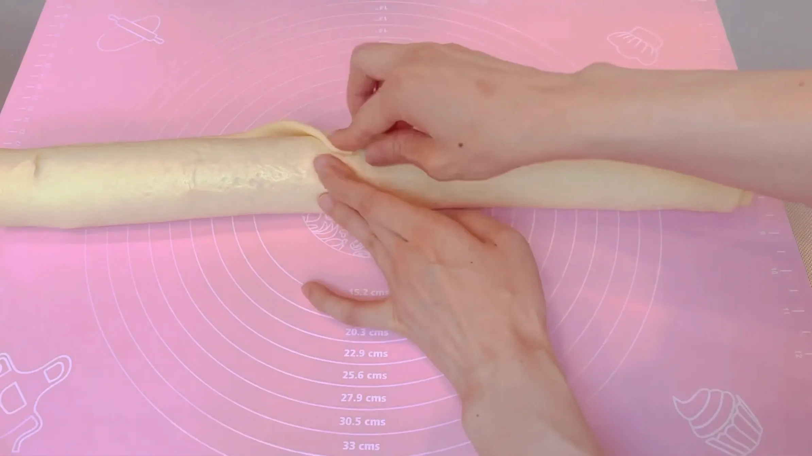
STEP 8
片端を少し残して縦半分に切る（[動画 04:16]）
生地に軽く粉をふり、包丁で中央を縦半分に切ります。この時、片端は切らずにつなげたまま残すことで、次の工程で生地を編みやすくなります。
生地に軽く粉をふり、包丁で中央を縦半分に切ります。この時、片端は切らずにつなげたまま残すことで、次の工程で生地を編みやすくなります。
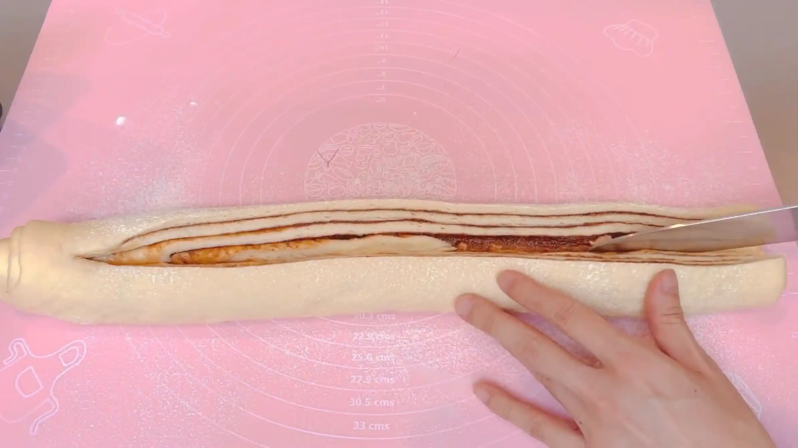
STEP 9
生地を編む（[動画 05:04]）
切った断面を上に向け、生地とコーヒーフィリングの層が表面に出るようにねじりながら編みます。断面を表にすることで、焼き上がったときにコーヒーフィリングの模様がきれいに見えます。
切った断面を上に向け、生地とコーヒーフィリングの層が表面に出るようにねじりながら編みます。断面を表にすることで、焼き上がったときにコーヒーフィリングの模様がきれいに見えます。
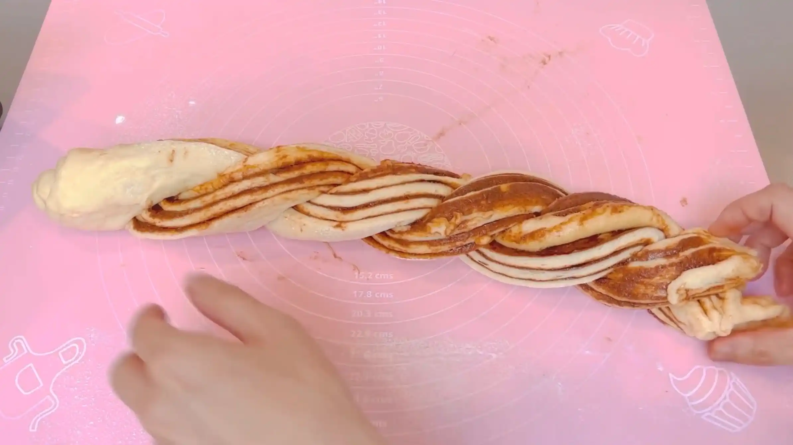
STEP 10
生地をリング状に成形する（[動画 05:57]）
編んだ生地の両端をつなぎ合わせてリング状に成形します。型を使わずそのまま焼くため、つなぎ目が開かないように生地同士をしっかりくっつけておきます。
編んだ生地の両端をつなぎ合わせてリング状に成形します。型を使わずそのまま焼くため、つなぎ目が開かないように生地同士をしっかりくっつけておきます。
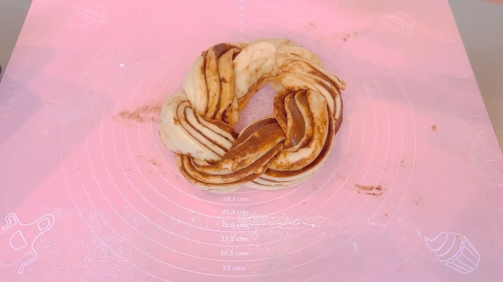
STEP 11
天板にのせ、ラップをして50分おく
成形した生地を二次発酵させます。発酵時間は室温によって変わるため、50分を目安に、生地がふっくらと膨らんだら次の工程へ進みます。
成形した生地を二次発酵させます。発酵時間は室温によって変わるため、50分を目安に、生地がふっくらと膨らんだら次の工程へ進みます。
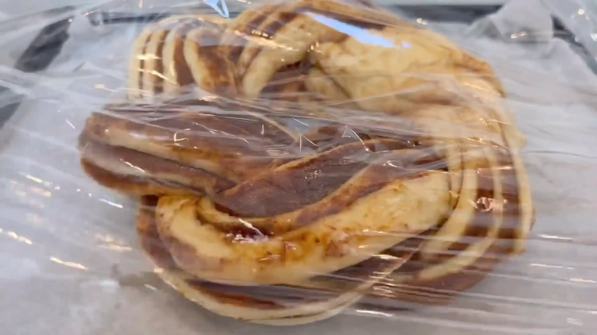
STEP 12
アーモンドをかける
発酵した生地の表面にお好みでアーモンドを散らします。
発酵した生地の表面にお好みでアーモンドを散らします。
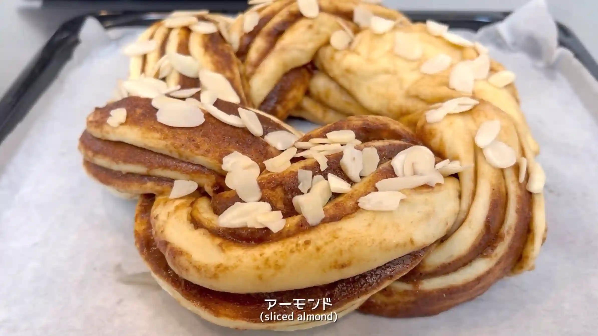
STEP 13
予熱なしのオーブン200℃で30分焼く
今回は予熱せずに焼き、オーブンの温度が上がっていく間も生地をゆっくり膨らませています。オーブンによって焼き上がりが異なるため、表面の焼き色や生地の状態を見ながら、必要に応じて焼き時間を調整してください。
今回は予熱せずに焼き、オーブンの温度が上がっていく間も生地をゆっくり膨らませています。オーブンによって焼き上がりが異なるため、表面の焼き色や生地の状態を見ながら、必要に応じて焼き時間を調整してください。
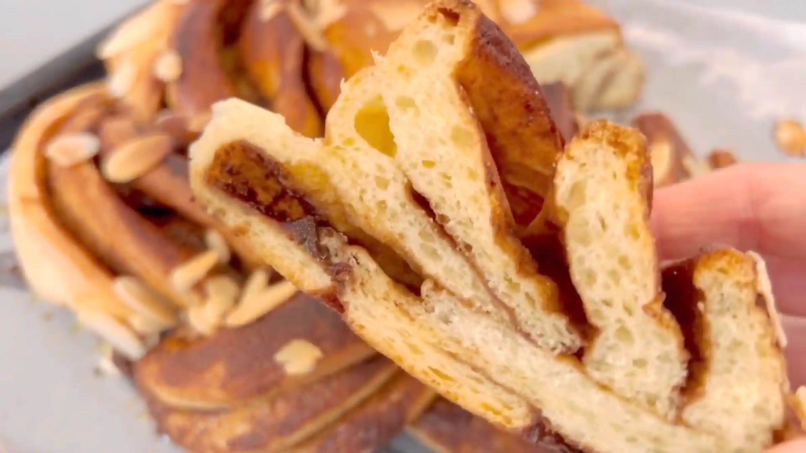
コーヒーフィリング
STEP 1
バターをクリーム状になるまで混ぜる
バターをなめらかなクリーム状になるまで混ぜます。バターが固い場合は、電子レンジで少しずつ温め、やわらかくしてから使います。
バターをなめらかなクリーム状になるまで混ぜます。バターが固い場合は、電子レンジで少しずつ温め、やわらかくしてから使います。
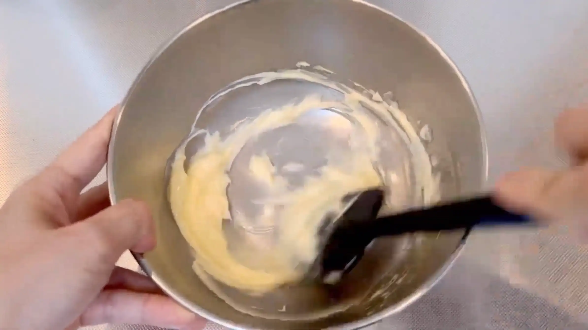
STEP 2
シナモン、カフェオレスティック、グラニュー糖を加えて混ぜる
シナモン、カフェオレスティック、グラニュー糖を加え、全体が均一になるまで混ぜ合わせます。インスタントコーヒーを使う場合は、粒を細かく砕いて加えます。
シナモン、カフェオレスティック、グラニュー糖を加え、全体が均一になるまで混ぜ合わせます。インスタントコーヒーを使う場合は、粒を細かく砕いて加えます。
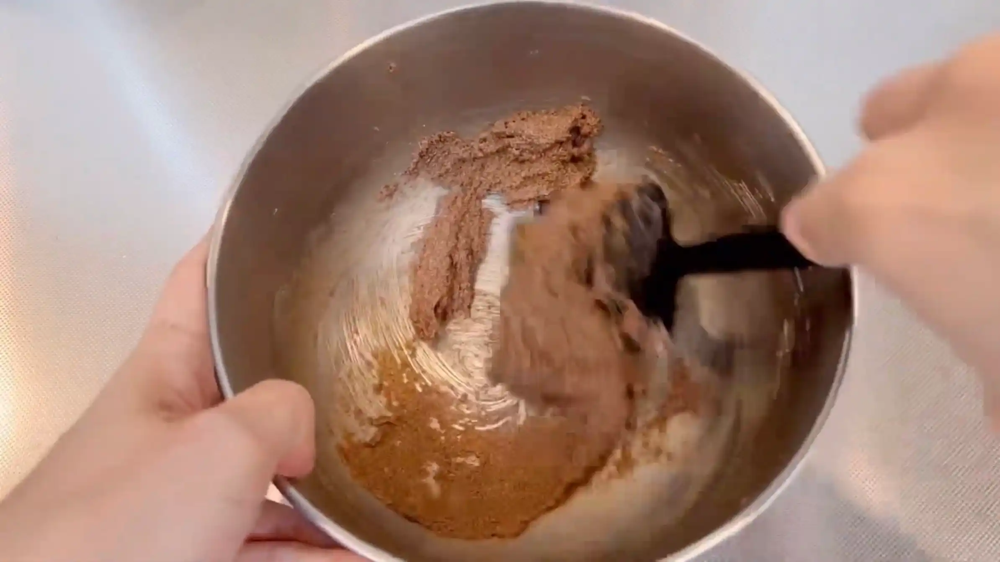
動画でチェック
おいしく作るためのワンポイントコラム
こんにちは、おなおドーナツです！
今回は、東ヨーロッパ発祥でニューヨークでも大人気のマーブルパン『バブカ』を、コーヒーシナモン味にアレンジして型なしのリング状で作っていきます。美しいマーブル模様をきれいに引き出し、おうちで可愛く焼き上げるための3つのコツをまとめました。
① 美しい層のコツ
カットした断面にきれいなマーブル模様をたくさん作るため、生地は35cm×45cmほどの大きさに薄く大きく広げるのがポイントです。フィリングを全面に塗ってからコロコロと細長く巻くことで、生地とフィリングが何層にも重なり、どこを切っても美しい断面が生まれます。
② 成形のコツ
生地を細長く巻いたあと、縦真っ二つにカットしてねじねじしていきますが、気温が高い日などは生地がだれてダルダルになりやすく成形が難しくなります。そのため、生地が扱いにくいなと思ったら切れ目を入れる前に冷蔵庫で30分程冷やすのがコツ。生地が引き締まってスパッと切りやすくなり、中の層を崩さずに綺麗なねじり模様が作れるようになります。生地を冷蔵した場合は二次発酵を長め（90分程）にとり、しっかりと生地の温度を戻してあげるのがおすすめです。
③ フィリングのコツ
バブカと言えばチョコレート味がメジャーで定番ですが、今回はコーヒーとシナモンを組み合わせたフィリングで仕上げます。ほろ苦いコーヒーの風味とシナモンの甘い香りがお互いを引き立て合い、ほど良い大人な甘さと上品な香りが味わえるおすすめの組み合わせです。
成形の途中で生地が少し開いてしまったり、閉じ目が少しクリエイティブな形に飛び出したりすることもありますが、熱々のオーブンから漂う良い香りと焼き立ての抜群の美味しさは格別です。おうちで新しいパンに挑戦するわくわく感をぜひ体験してみてください。それでは、おうちパン作りの時間を一緒に満喫しましょう！
今回は、東ヨーロッパ発祥でニューヨークでも大人気のマーブルパン『バブカ』を、コーヒーシナモン味にアレンジして型なしのリング状で作っていきます。美しいマーブル模様をきれいに引き出し、おうちで可愛く焼き上げるための3つのコツをまとめました。
① 美しい層のコツ
カットした断面にきれいなマーブル模様をたくさん作るため、生地は35cm×45cmほどの大きさに薄く大きく広げるのがポイントです。フィリングを全面に塗ってからコロコロと細長く巻くことで、生地とフィリングが何層にも重なり、どこを切っても美しい断面が生まれます。
② 成形のコツ
生地を細長く巻いたあと、縦真っ二つにカットしてねじねじしていきますが、気温が高い日などは生地がだれてダルダルになりやすく成形が難しくなります。そのため、生地が扱いにくいなと思ったら切れ目を入れる前に冷蔵庫で30分程冷やすのがコツ。生地が引き締まってスパッと切りやすくなり、中の層を崩さずに綺麗なねじり模様が作れるようになります。生地を冷蔵した場合は二次発酵を長め（90分程）にとり、しっかりと生地の温度を戻してあげるのがおすすめです。
③ フィリングのコツ
バブカと言えばチョコレート味がメジャーで定番ですが、今回はコーヒーとシナモンを組み合わせたフィリングで仕上げます。ほろ苦いコーヒーの風味とシナモンの甘い香りがお互いを引き立て合い、ほど良い大人な甘さと上品な香りが味わえるおすすめの組み合わせです。
成形の途中で生地が少し開いてしまったり、閉じ目が少しクリエイティブな形に飛び出したりすることもありますが、熱々のオーブンから漂う良い香りと焼き立ての抜群の美味しさは格別です。おうちで新しいパンに挑戦するわくわく感をぜひ体験してみてください。それでは、おうちパン作りの時間を一緒に満喫しましょう！


コーヒーとシナモンの香りが豊かに広がる『コーヒーシナモンバブカ』のレシピです。プレーンな生地に風味豊かなフィリングを巻き込み、型を使わず華やかなリング状に焼き上げます。コラムでは「美しい層のコツ」「成形のコツ」「フィリングのコツ」の3つのポイントをシンプルにご紹介します。